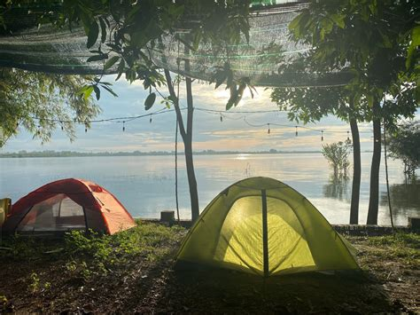
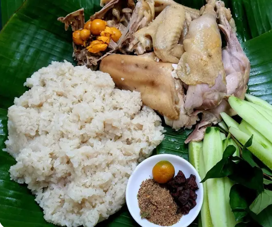
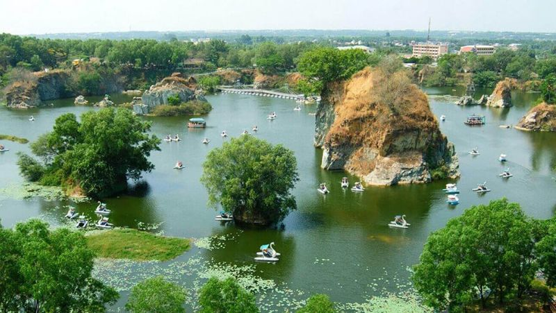
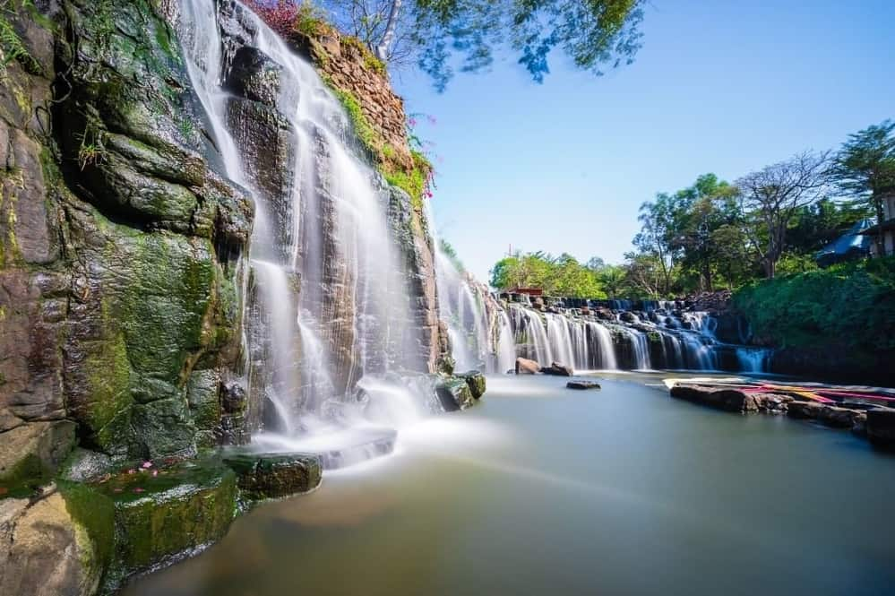
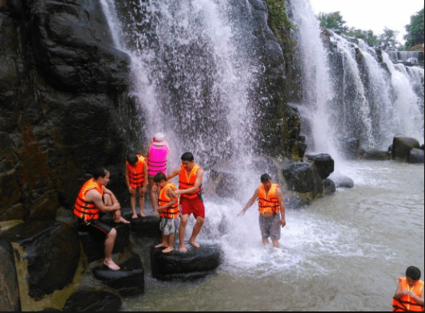
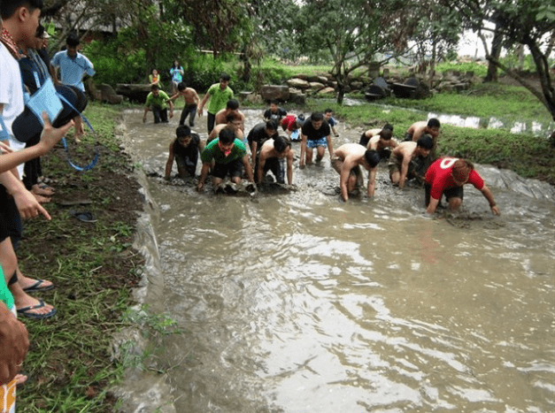
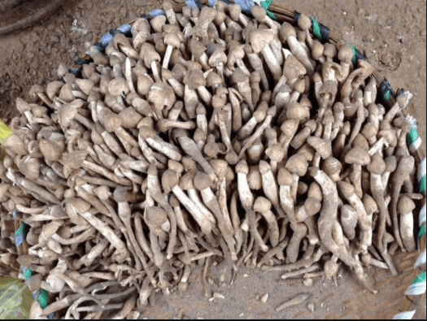

Hồ Trị An thuộc địa phận tỉnh Đồng Nai, do có diện tích đặc biệt lớn nên hồ trải rộng ở nhiều huyện của tỉnh như: Vĩnh Cửu, Định Quán,Thống Nhất và Trảng Bom. Ở hồ Trị An có một địa điểm vui chơi, cắm trại vô cùng nổi tiếng thuộc huyện Vĩnh Cửu, được rất nhiều du khách yêu thích.
* Ngựa kéo quân
* Câu cá
* Bắn cung
* Thuyền đụng
* ăn uống


Khu danh thắng Bửu Long được xem là một món quà quý giá của tỉnh Đồng Nai và chỉ cách Sài Gòn khoảng 30km về hướng Đông. Nơi đây mang vẻ đẹp của núi non, sông hồ, hang động,...được thiên nhiên bồi đắp qua năm tháng tạo nên khung cảnh hữu tình và mỹ lệ. Vì thế mà người ta gọi khu du lịch Bửu Long là Vịnh Hạ Long thu nhỏ.
Một số hoạt động thú vị
* phiêu phiêu câu cá
* picnic
* chạy bộ quanh hồ
detail

Nếu bạn là người yêu thiên nhiên, yêu hương đồng gió nội và vào những kì nghỉ ngắn bạn muốn được hòa mình với thiên nhiên thì thác Đá Hàn chính là một gợi ý tuyệt vời dành cho bạn. Thác Đá Hàn Đồng Nai là một địa điểm du lịch mới lạ mang vẻ đẹp thiên nhiên hùng vĩ với cảnh sắc hương đồng gió nội khó cưỡng, phong cảnh sơn thủy hữu tình cùng vườn cây ăn trái trĩu quả nên chắc chắn sẽ là địa điểm lý tưởng để cắm trại dã ngoại cuối tuần
Một số hoạt động thú vị
* picnic
* tắm thác



Nấm mối
detail